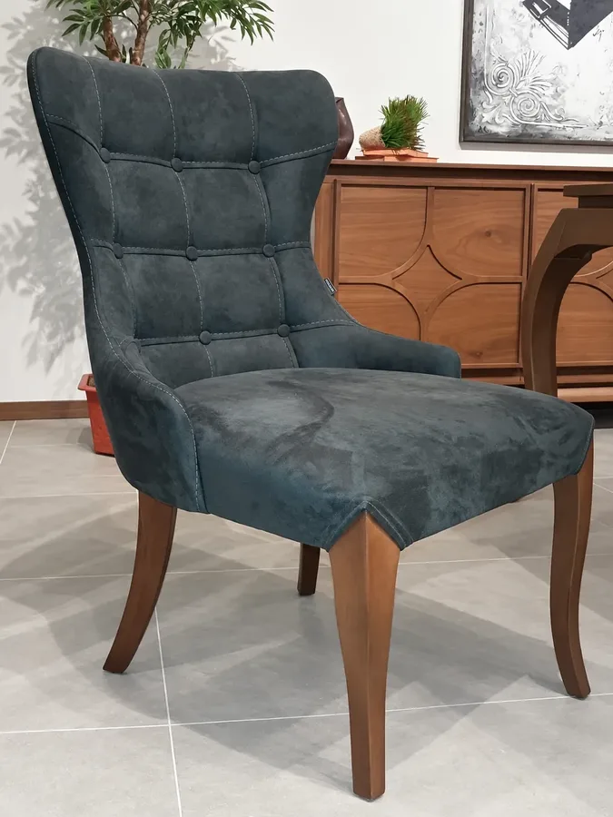
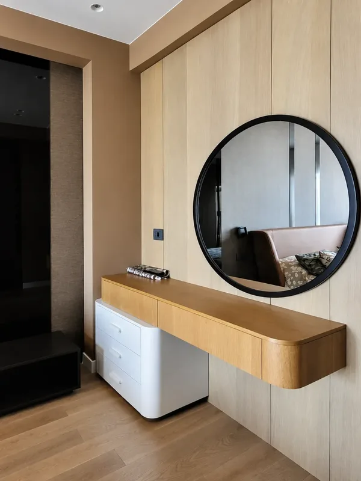

Divandan çox razıyam! Kapitone tikişi səliqəli işlənib, parça toxunuşa xoşdur və gözəl görünür. Ustalar ölçüləri otağımıza dəqiq uyğunlaşdırdılar. Həm gözəl, həm də rahat alındı. Təşəkkür edirəm!Ramil HüseynovKapitone divan
Rosh Wood: sifarişlə mebel və dülgərlik məmulatları
Sifarişlə fərdi mebel
və dülgərlik
məmulatlarıAğac, DSP və digər materiallar: ölçülərinizə və büdcənizə uyğun seçəcəyik. Eskizdən montaja qədər.
Rosh Wood rəqəmlərdə
100+həyata keçirilmiş layihə
14+illik təcrübə
4müraciətdən montaja qədər mərhələ
100%ölçülərinizə görə istehsal
Haqqımızda


Rosh Wood — sizin məkanınız üçün yaradılmış mebel və dülgərlik məmulatları.
14 ildir ki, fərdi layihələri həyata keçiririk: tək bir masadan bütöv obyektin kompleks abadlaşdırılmasına qədər. Xüsusi ustalığımız təbii ağacla işdir: masiv, oyma və qeyri-standart formalar. Həmçinin DSP və digər materiallarla işləyir, onları ideyaya və məmulatın təyinatına uyğun seçirik.
Sifarişin bütün mərhələlərini bir komanda aparır: eskiz və hesablamadan istehsala və montaja qədər. Bu, ideyanı hər detalda qorumağa və yekun nəticəyə cavabdeh olmağa kömək edir.
Bizim üçün iş o zaman tamamlanır ki, hər şey düşünülmüş, dəqiq hazırlanmış və səliqə ilə quraşdırılmış olsun. Bütün işlərə zəmanət: 2 il.
Layihələrimiz
0 / 0 iş
Necə işləyirik
Müraciətdən
montaja qədər
dörd addım
Müraciət
Sifariş buraxırsınız və ya WhatsApp-da yazırsınız. İş saatlarında 1 saat ərzində zəng edirik.
Müzakirə
Ölçüləri, materialı, büdcəni və istəkləri dəqiqləşdiririk. Haradan başlamağı məsləhət görürük.
İstehsal
Məmulatı emalatxanada sizin ölçülərinizə görə hazırlayırıq. Kiçik məmulatlar 2–3 həftəyə hazırlanır, mürəkkəb sifarişlər isə 3 aya qədər çəkə bilər.
Montaj
Məmulatı yerində quraşdırırıq. Bütün görülən işlərə 2 il zəmanət verilir.
Rəylər
Müştərilər nə deyir
Vanna otağı üçün asma tumba və hündür şkaf sifariş etmişdim. Ölçülər kaflara dəqiq uyğunlaşdırıldı, furnitura və tutacaqlar keyfiyyətlidir. Quraşdırma bir gün çəkdi, hər şey bərabər və səliqəli dayanır.Vaqif RəmixanovVanna otağı mebeli
Əllinci illər üslubunda bufet xoşuma gəldi və eyni üslubda sifariş etdim. Məhz təsəvvür etdiyim kimi hazırladılar: qoz ağacı, sadə xətlər, artıq heç nə yox. Otağa əla yaraşır.Rəşad MəmmədovƏllinci illər üslubunda bufet
Əlaqə
Ideyanız var?
Gəlin onu
müzakirə edək.
Nə lazım olduğunu yazın: iş saatlarında 1 saat ərzində zəng edib haradan başlamağı məsləhət görəcəyik.
- Telefon
- +994 50 245 33 44
- İş saatları
- 10:00–20:00
- Sosial şəbəkə
- @rosh_wood
Sifariş buraxın
Sifariş qəbul edildi
İş saatlarında 1 saat ərzində zəng edəcəyik.